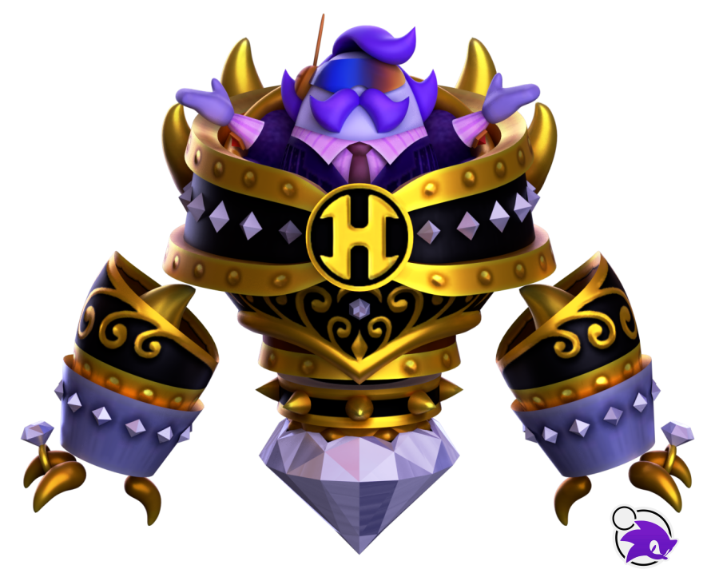
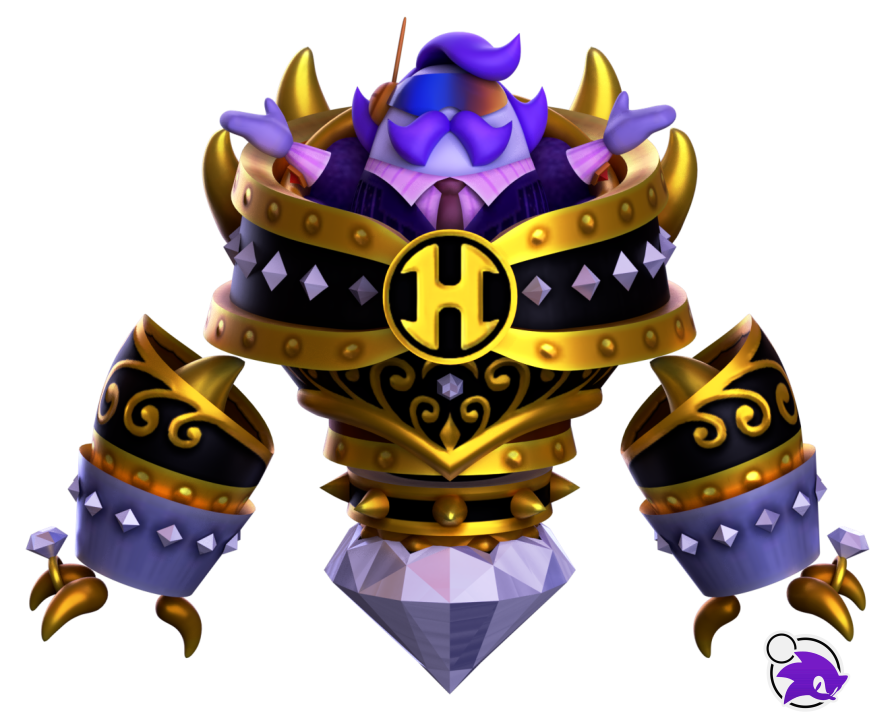

President Haltmann is from the game “Kirby Planet Robobot” and, if his appearance wasn't immediately clear, represents capitalism and the elite. And beyond first impressions, he also represents colonialism through his company, the driving force behind the entire game, as it arrives on planet popstar and begins harvesting it for resources on a massive scale, all the while treating the planet's natural inhabitants as if they were nothing. Later on in the game, we can even see entire planets branded with the company logo, visible from space.
Throughout the game, Kirby experiences a number of the effects a colonialist force is having on their home planet, with forced industrialization and even Haltmann calling Kirby and the rest of the residents of planet popstar “savages”. Alongside all this however, president haltman also becomes a victim to his own deeds, as he attempts to increase profits through a supercomputer called star dream. Essentially, he directly interfaces with this machine, in which he loses all of his individuality and entirely focuses on consumption and profit without any care for his surroundings or even his family.
All of the events and deeds of this specific Kirby villain go to show how inhuman and soulless capitalism can be, as well as how colonialism creates and then leaves behind a land deeply affected by its influences. In fact, it might not be a coincidence that this Kirby boss has HAL in his name, aka the name of the fairly large publishing company that Masahiro Sakurai works for. The villain goes to show how late stage capitalism is not only harmful to those that have it forced upon them, but also harmful to those who actively participate and become engulfed by it.